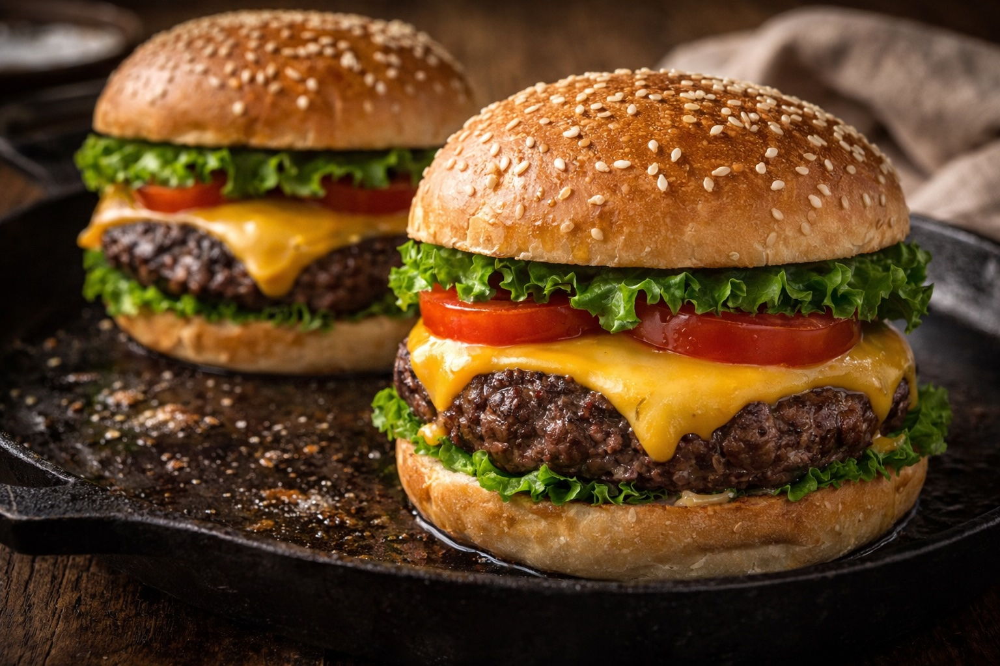

Whole Foods Recipes: Classic 80/20 Cast Iron Burger
Last updated: February 26, 2026

If you control meat quality, fat ratio, heat, and oils, a homemade burger can match a burger joint—and often beat fast food.
- Fresh 80/20 is the foundation — flavor and satisfaction come from fat + sear.
- Cast iron makes the crust — steady heat creates better browning.
- Keep it simple — salt, pepper, bun. Add cheese if you want.
Purpose
Create a simple, high-quality burger that beats fast food by controlling freshness, fat ratio, heat, and oils. This is a repeatable “home standard” recipe.
Total time
15–20 minutes total. Active time is ~10 minutes.
Ingredients (1–2 burgers)
- 80/20 ground beef — ⅓ to ½ lb per burger (fresh-ground if possible, chunk preferred)
- Buns — simple, soft buns work well
- Salt (optional) — to taste
- Black pepper (optional) — to taste
- Cheese (optional) — cheddar or Colby Jack
- Tomatoes (optional)
- Lettuce (optional)
That’s it. If the beef is good, you don’t need sauces or extras.
Cast iron: why it matters (and how to maintain it)
A heavy cast iron pan holds heat and creates a better sear. Thin pans cool down when the meat hits the surface; cast iron keeps the heat steady, which helps build a flavorful crust without overcooking the center.
Maintenance rhythm: after cooking, let the pan cool slightly, rinse with warm water (no soaking), dry immediately, then place it on low heat to remove remaining moisture. Finish with a very thin wipe of oil to protect the surface. The goal is dry + lightly oiled, not greasy.
Method
1) Heat the pan
Preheat cast iron on medium-high until it’s properly hot (a drop of water should sizzle). Most of the time you don’t need added oil—80/20 has enough fat.
2) Form the patty
Handle the beef gently. Form a thick patty and make a small thumb-dent in the center to reduce puffing. Season the outside right before cooking.
3) Sear and flip once
Cook 3–4 minutes on the first side until a deep brown crust forms. Flip once and cook 2–4 minutes more depending on thickness.
4) Add cheese (optional)
Add cheese during the last 60–90 seconds. Lower heat slightly and cover the pan for 20–30 seconds to melt cleanly.
5) Rest
Rest the burger 2 minutes before serving. This keeps juices in the meat.
Buns
For a small upgrade, toast buns lightly in the oven or on a dry pan. If you prefer to avoid grease on buns, toast them dry—heat alone improves texture.
Food safety
Ground beef is safest when cooked through. If you choose to cook to a specific doneness, use a thermometer and follow reputable guidance. Fresh grind reduces risk, but does not eliminate it.
Family reaction
This burger converted instantly: my son said it was “much better” than a fast food chain burger. Fresh-ground beef and clean cooking technique makes a noticeable difference.
Next steps
Continue with more Whole Food Cooking.
This article focuses on general food quality and cooking with quality ingredients, not medical advice.